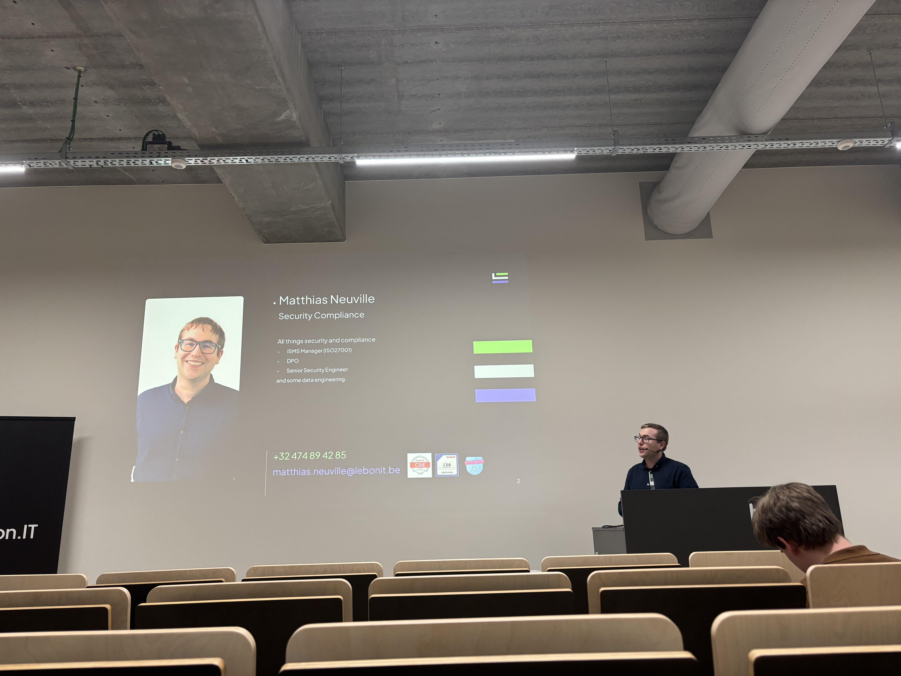
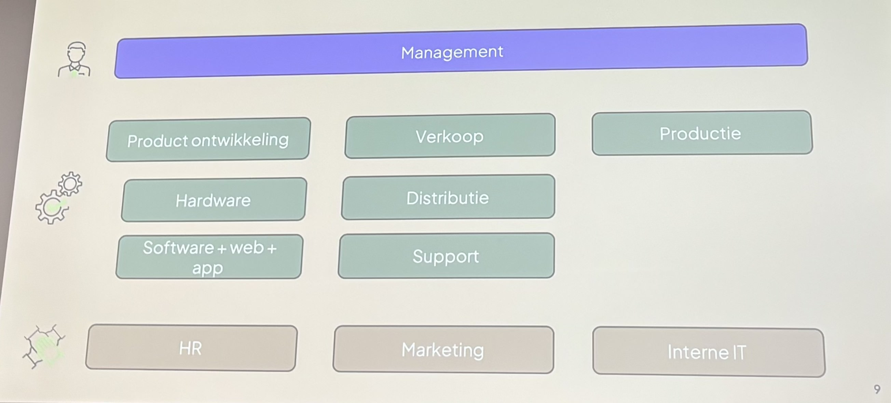
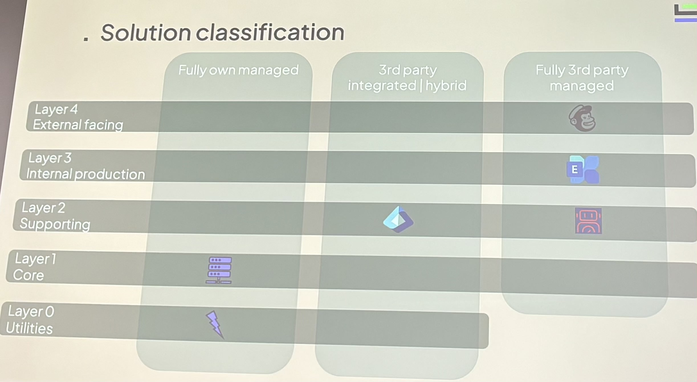

Tech&Meet: Cyber Security Is More Than Cyber and Security 👩🏻💻🌟
About the talk
Our speaker for the event was Matthias Neuville. Matthias is a Security Engineer at Lebon IT in Roeselare.
Lebon IT is a Belgian company that provides IT services to small and medium-sized businesses. They offer a wide range of services, including network security, cloud computing, and IT support. They make sure that the company can work performant and secure.
Matthias his goal to inspire professionals to think outside the box and adopt a holistic approach that surpasses traditional cybersecurity mindsets. During his talk he layed out the different entities that are involved in protecting an organization and how they can work together to create a more secure environment.
It takes 20 years to build a reputation and a few minutes of cyber-incident to ruin it ~ Stephane Nappo
Basic Infrastructure Knowledge
Defining "us"
Let's say a company wants to protect themself from hackers. Lebon IT says that the first step is identifying the what, where, when, who, why, and how. Matthias emphasized the importance of having a solid understanding of the basic infrastructure of an organization. This includes knowledge of the network architecture, hardware, software, and other components that make up the IT environment. Without this foundational knowledge, it is difficult to implement effective security measures and protect the organization from cyber threats.
Product Knowledge
In addition to understanding the basic infrastructure of an organization, it is also important to have knowledge of the products and services that the organization uses. This includes software applications, hardware devices, and other tools that are critical to the organization's operations. By having a deep understanding of these products, security professionals can identify vulnerabilities and implement security controls to protect them from cyber threats. It is also important to note that most of the time it is not only the professionals that need to be aware of the products and services. The end-users also need to be trained to recognize potential threats and how to respond to them. This is where security awareness training comes into play.
Business and Process Knowledge
How organizations operate and the internal processes are handled is very important to consider. Most of the time security is not the first thing that comes to mind when going about these things, everything needs to go "smooth". However, understanding the business processes and how they interact with IT systems is crucial for identifying potential security risks. This includes knowledge of how data flows through the organization, who has access to it, and how it is processed and stored. By having a deep understanding of these processes, security professionals at Lebon IT identify weak points and implement measures to protect sensitive information.
Below is a diagram that shows how the different entities are connected, that form the company:
People Skills
Conclusion
In the talk, Matthias laid out a scenario involving a fictional company called I-Bloom and a fictional person named Gary. Gary was going to review the company using an approach based on four important steps. These steps were:
- Business Insights
- Communication
- Toolstack
- Legal
Putting these things together and mapping them out in a security diagram can help identifying the threats and map out solutions. It was very interesting to see how it-businesses approach securing other companies and to see that cybersecurity is more than just cyber and security. Below is a diagram of how a possible solution would be constructed:
